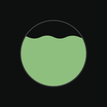
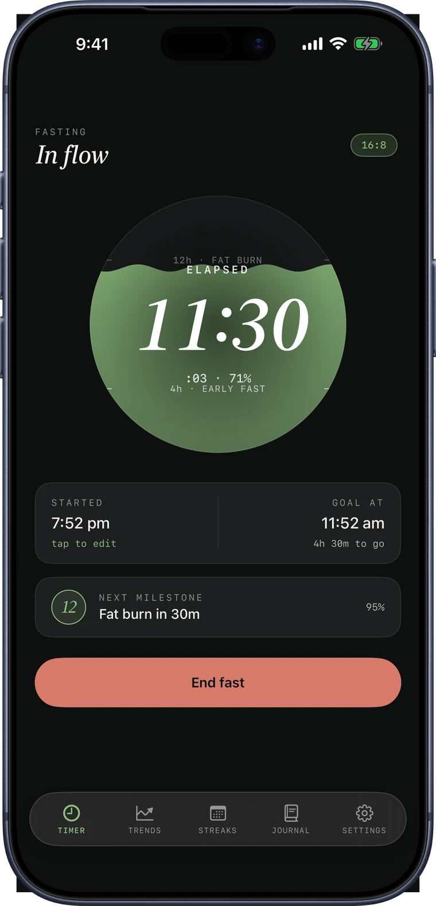
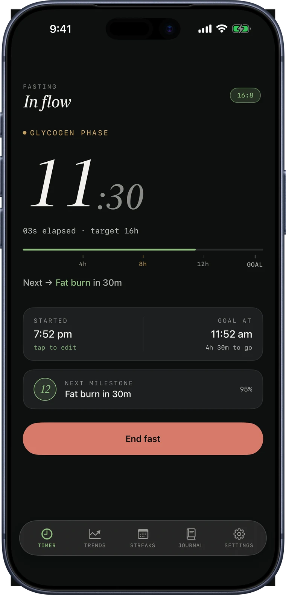
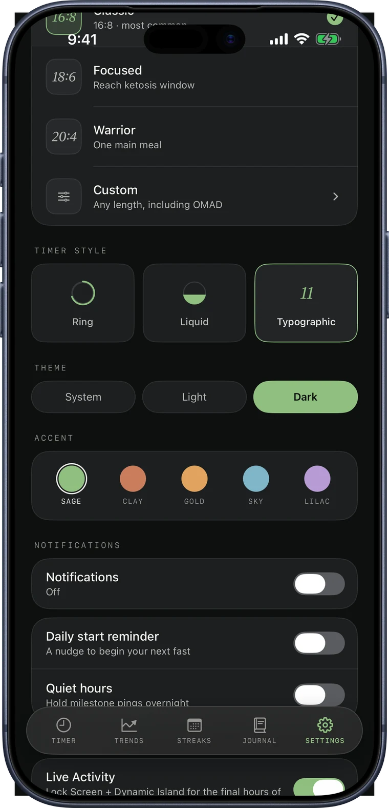
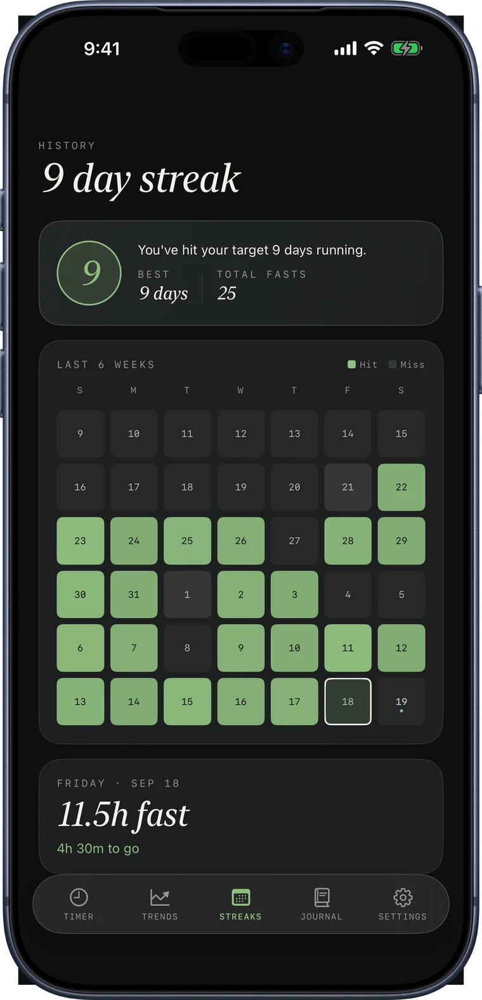
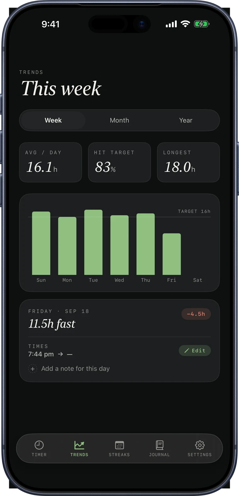
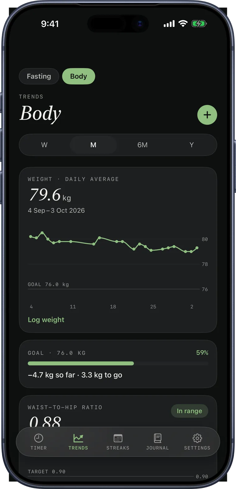
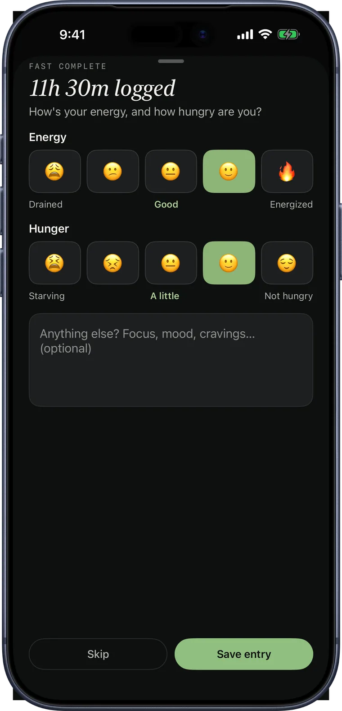
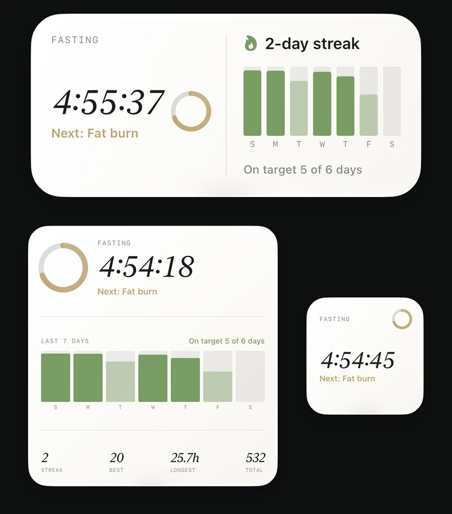

A fasting timer that feels calm, not clinical.
Nestis (NESS-tiss, /ˈnɛstɪs/), Greek for fasting.
Nestis tracks your fast, shows the metabolic phase you're in, and builds streaks you can actually see. No account, no clutter, private backup over iCloud.
Free to download.
iPhone. No account, no sign-up.
One timer, every screen

Track
Start a fast. Watch the phase change.
Pick a schedule, tap start, and Nestis carries you through it. A metabolic phase bar moves from Fed through Fat Burn to Ketosis, so you always know where you are, not just how much time is left.
Choose a typographic, ring, or liquid timer, whichever reads best at a glance.

Choose your schedule
16:8, 18:6, 20:4, or your own.
Five built-in presets cover the common protocols. Set any fasting length you like when you're ready to go further.
Gentle milestone notifications mark the moments that matter, without nagging.

See your progress
A streak you can see, a trend you can trust.
A six-week heatmap shows your current streak, your best, and every fast behind it. Trends turn a week of fasts into a pattern worth noticing.


Body · Pro
Weight, waist, and the ratios that matter.
Log weight and waist in seconds, set a goal, and watch it build by week, month, or year. Waist-to-hip and waist-to-height ratios are shown against WHO and NICE targets.
Connect Apple Health, if you like, to bring in readings from your scale. Your weight and measurements stay on your iPhone and in Apple Health, and are never sent to iCloud.

How you feel
See what works for you.
After each fast, rate your energy and hunger in about ten seconds. Nestis shows how your fasts felt, and with Pro, how that changes with the length of your fast.
On supported iPhones, short summaries are written on your device by Apple Intelligence. Nothing leaves your phone.

On the Lock Screen
Your fast, without opening the app.
Home Screen widgets in every size and a Live Activity on the Lock Screen and Dynamic Island keep your elapsed time and phase in view, all the time.

What's in it
Simple enough to open and tap start.
Deep enough to see the shape of your fasting over months.
- Typographic, Ring & Liquid timers: pick the display that reads best to you
- 5 schedule presets: 12:12 through 20:4, plus any custom length
- Metabolic phase bar: Fed, Early Fast, Glycogen, Fat Burn, Ketosis, Autophagy
- Milestone notifications: gentle nudges as you cross each phase
- Trends: this week free, month and year with Pro
- Body tracking: weight and waist charts, a goal line, and health ratios (Pro)
- Apple Health: optional, import scale readings and save what you log (Pro)
- Energy & hunger: a ten-second check-in after every fast, and how it changes with fast length
- Fasting window: flexible, or scheduled with a start reminder
- Streaks: a 6-week heatmap, current, best, and total
- Journal: a note with every fast, mood and reflections
- Five themes: Sage, Clay, Gold, Sky, and Lilac, with matching app icons
- iCloud backup: your fasts and journal, backed up automatically, free forever
- Widgets: home screen, Lock Screen, and Live Activity
- Export: JSON, PDF, and CSV, whenever you want your data out
Body tracking, Apple Health, energy and hunger insights, unlimited journal entries, all timer styles, every theme, and full trend history come with Nestis Pro, available inside the app.
Your data, yours
No account. No sign-up. No servers of ours.
Your fasting history stays yours, backed up privately through your own iCloud account. Your weight and body measurements stay on your iPhone and in Apple Health, and never go to iCloud. There's nothing to create, nothing to log into, and no copy of your data sitting on a server we run, because we don't run one.
Nestis is in final testing before its App Store launch. Questions? Write to hello@nestis.app. Common questions are already answered on the support page.